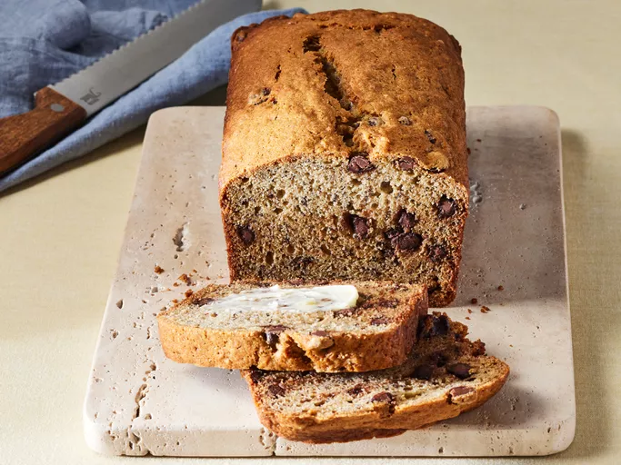

Chocolate Chip Banana Bread

Chocolate Chip Banana Bread
Ingredients
- 2 cups all-purpose flour
- 1 teaspoon baking powder
- 1 teaspoon baking soda
- 1 teaspoon salt
- 3 ripe bananas, mashed
- 1 tablespoon milk
- 1 teaspoon ground cinnamon, or to taste
- 1 cup white sugar
- 1/2 cup butter, softened
- 2 large eggs
- 1 cup semisweet chocolate chips
Steps
- Gather all ingredients.
- Preheat the oven to 325 degrees F (165 degrees C). Grease a 9x5-inch loaf pan, preferably glass.
- Mix flour, baking powder, baking soda, and salt in a bowl.
- Stir bananas, milk, and cinnamon in another bowl.
- Beat sugar and butter together in a third bowl with an electric mixer until light and fluffy; add eggs one at a time, beating well after each addition.
- Stir banana mixture into butter mixture; mix in flour mixture until just blended. Fold in chocolate chips; pour batter into the prepared loaf pan.
- Bake in the preheated oven until a toothpick inserted into the center comes out clean, about 70 minutes. Cool in the pan for 10 minutes before removing to cool completely on a wire rack before slicing.
- Slice and enjoy!